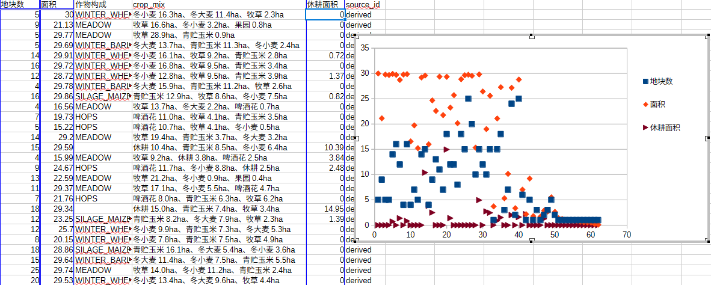

农业监测 · GIS 模拟数据平台
以真实地形上的行政区为底图，由确定性模型生成 501 个地块、62 个经营单元、 549 天的农事与气象数据，内容涵盖种植结构、积温需求、单产、运距、水分与养分、病害等指标， 并据此开展收储运距分析、收获排产与情景推演。页面为纯静态实现，除底图要素外，数据均为模型模拟结果。
模拟数据一览
地图上的每个色块对应数据表中的一行记录。以下四图展示同一批数据在表格工具中的呈现形式（点击图片可查看原图）。

覆盖 7 个作物（冬小麦、冬大麦、果园、牧草、啤酒花、青贮玉米、冬油菜）的积温需求与参考单产对照。 基温为 0 者属多年生作物（果园、牧草），不存在“播种—收获”季。

透视表：按作物统计种植面积合计与平均单产。 模拟主页面「图表 › 作物面积构成」即采用此组数据。

62 个经营单元的地块数量与面积分布，并区分休耕面积。地块数量与面积规模并不一致， 因此「经营单元」页签支持按指标排序。

地块级进度记录：播种日、收获日、季次、积温需求与当季单产。 在模拟主页面选中任一地块后，右侧「选中地块」面板即显示对应记录。
基础操作
六项基础功能：时间轴、指标切换、地块选择、表格浏览、数据视图与情景推演。
时间轴下方标注季度刻度；拖动至任一位置，右侧显示对应日期，地图与表格同步切换。 按 空格 键播放或暂停，可选 1× / 4× / 12× 速度。
同一地块可按单产、生长进度、病害等级、水分保持、养分保持、到收储点等指标着色，图例随指标变化。 颜色仅表示相对高低，具体数值见表格与「选中地块」面板。
单击地块将其高亮，右侧面板显示该地块的作物、播种日与收获日、单产及运距； 再次单击取消选中，亦可使用「清除高亮」按钮统一取消。
页签共九个：重点问题、当前帧指标、经营单元、统计网格、作物与收成、告警明细、情景推演、透视视图、图表。 点击任意一行，地图上对应地块同步高亮，实现表与图的联动。
右侧抽屉展示全行表格，支持关键字筛选、按表头排序、选择显示列与导出 CSV， 并可一键生成单页可打印报告（图片内嵌，可直接打印）。
候选增点按「受益面积 × 平均节省时间」绘制散点，位于右上方向的方案综合收益更高； 亦可切换至错峰收储的前后对照，查看峰值变化。
数据口径
- 数据属性：由确定性模型生成（同参数同结果），非实测数据。表中
synthetic=1的列为模拟值。 - 底图要素：地形高程、行政边界、道路、水系等来自公开数据；产量、水分、养分与病害指标由模型生成。
- 土壤与分区：土壤属性留空，不作假设；分区基于模拟属性构建，真实分区需 DEM、土壤图与历史产量资料。
- 口径边界：多年生作物（牧草、果园）不存在“播种—收获”季，故不纳入收获排产表。